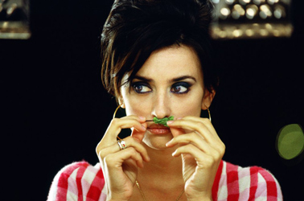
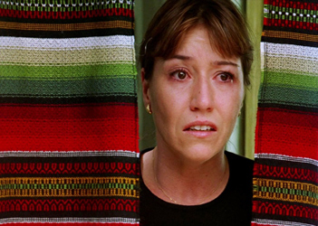
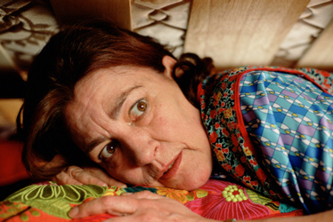
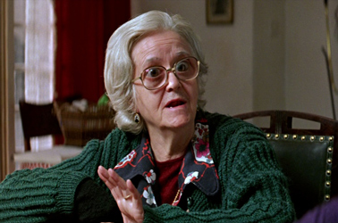
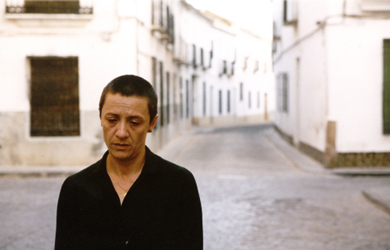
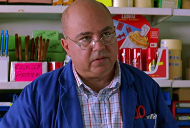
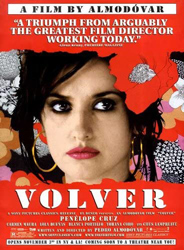
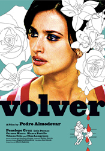
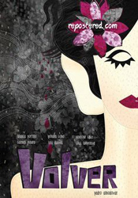

Penélope Cruz - Raimunda
Lola Dueñas - Soledad ("Sole")


Carmen Maura - Irene Trujillo, the mother of Raimunda and Sole
Chus Lampreave - Aunt Paula


Blanca Portillo - Agustina
Paula
Paco
Inés
Carlos
Neighbour
Neighbour
Neighbour
Hungry second camera assistant
Agustín Almodóvar - Hardware store employee

Raimunda and Sole are sisters who grew up in Alcanfor de las Infantas, a small village in La Mancha, but now both live in Madrid. Their parents had died in a fire three years before.
Raimunda and her daughter Paula live with Paula's father Paco. When he attempts to rape Paula, claiming that he is not really her father, Paula stabs him in self-defense. Raimunda hides the corpse in the deep-freezer of a nearby restaurant with an absent owner, Emilio. When members of a film crew happen upon the restaurant, Raimunda strikes a deal to cater for them, and finds herself back in the restaurant business.
Meanwhile, Sole returns for the funeral of her elderly, dementia-stricken Aunt Paula. Aunt Paula's neighbour Agustina confesses to Sole that she has heard Paula talking to the ghost of their mother Irene . Sole encounters the ghost herself, and when she returns to Madrid, she discovers that the ghost has stowed away in the trunk of her car. Sole agrees to let Irene stay with her: Sole operates a hair salon in her apartment, and Irene will assist her. Irene says that she wants to know why Raimunda hates her, and why she herself is afraid to reveal herself to Raimunda.
Raimunda reveals to Paula that Paco was not her biological father, and promises to tell her the whole story later. Agustina is diagnosed with terminal cancer and goes to Madrid for treatment. Raimunda visits her in the hospital. Agustina asks Raimunda if she has seen her mother's ghost. Agustina hopes that the ghost will be able to tell her about her own mother, who disappeared three years before. Raimunda leaves Paula with Sole, rents a van and transports the freezer to a convenient spot by the river Júcar. While staying in Sole's apartment, Paula meets her grandmother's ghost and grows close to her. The next night, Agustina comes to the restaurant, and Raimunda reveals two startling secrets: her father and Agustina's mother were having an affair, and Agustina's mother disappeared on the same day that Raimunda's parents died.
Sole tells Raimunda that she has seen their mother's ghost, who is in the next room with Paula. Irene admits that she did not, in fact, die in the fire, and reveals the whole truth. The reason for Raimunda and Irene's estrangement is that Raimunda's father sexually abused her, resulting in the birth of Paula; thus, Paula is Raimunda's daughter and her sister. Irene tells Raimunda that she did not know about the abuse until Aunt Paula told her about it, and never forgave herself for failing to stop it.
Irene explains that she found her husband in bed with another woman and started the fire that killed them both. The ashes that had been presumed to be Irene's were, in fact, the ashes of Agustina's mother, the woman with whom Irene's husband was having an affair. After the fire, Irene wandered for several days in the countryside, until she decided that she wanted to turn herself in. But first, she wanted to say goodbye to Aunt Paula, who had lost the ability to look after herself and with whom Irene had been living prior to setting the fire. Paula welcomed Irene home as if nothing had happened, and Irene stayed, caring for her sister and expecting that the police would come soon to arrest her. Due to the superstitious and closed nature of the community, however, the police never came and the residents, accustomed to tales of the dead returning, explained the rare sightings of Irene as a ghost. The family reunites at Aunt Paula's house. Irene reveals her presence to Agustina, who believes her to be a ghost.
Irene pledges to stay in the village and care for Agustina as her cancer worsens, saying to Raimunda that it was the least that she could do after killing Agustina's mother. Raimunda visits her mother at Agustina's house, and the two embrace and promise to repair their relationship.



Carlos Gardel / Alfredo Le Pera - Performed by Estrella Morente